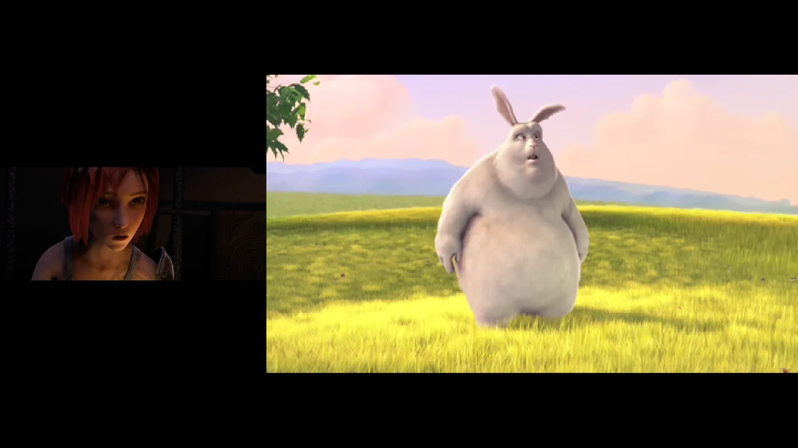
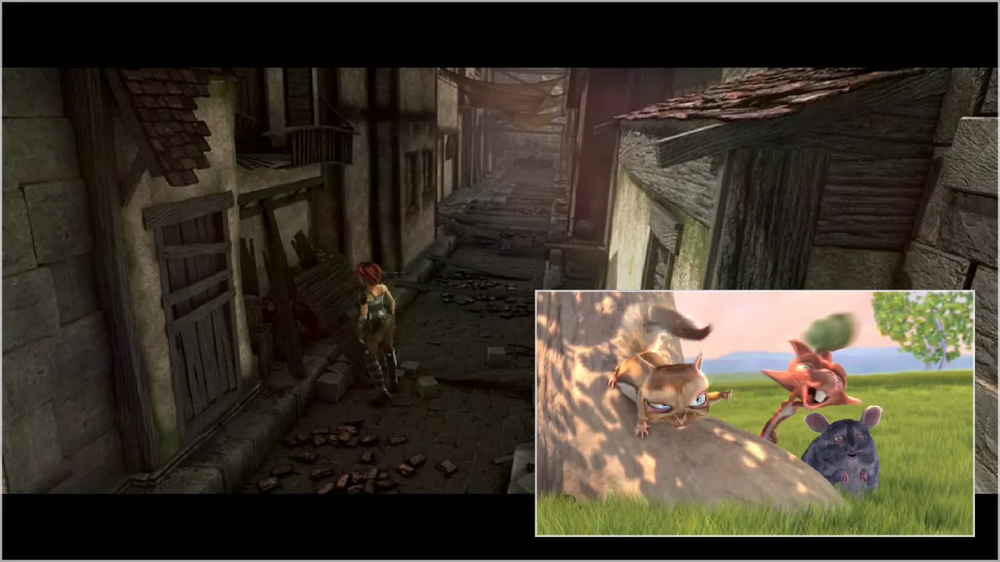
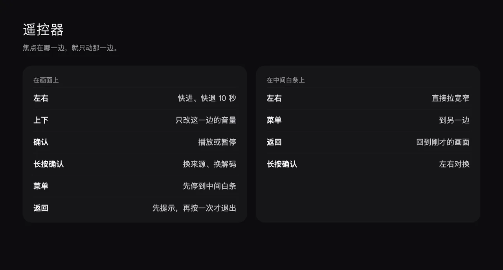

一块屏幕，两路画面。Two pictures on one screen.
声音也分开。Audio stays separate.
一边放跟练，一边放纪录片。手机投过来，或者直接播电视里的片子。One side for a workout, the other for a documentary. Cast from a phone, or play a file already on the TV.
左右各一路。One video per side.
各有各的进度、音量和硬解/软解。两路可以同时放，声音也同时出。Each keeps its own position, volume, and hardware or software decoder. Both can play together, and both can be heard.

实机录屏截图。画面来自 Blender 基金会的开放电影 Sintel 与 Big Buck Bunny（CC BY 3.0）。Captured on a television. Footage: the Blender Foundation open movies Sintel and Big Buck Bunny (CC BY 3.0).
手机直接投。Cast straight from a phone.
手机的投屏列表里会出现两个设备：「双屏左」和「双屏右」。这是普通的 DLNA，不需要账号。The cast list shows two devices: DualPane Left and DualPane Right. It is ordinary DLNA, with no account involved.
想投哪边投哪边Pick a side
投到哪一边，片子就出现在哪一边，焦点也会跟过去。The video appears on the side you chose, and focus follows it.
也能播本机视频Local files too
在电视上长按确认键，从菜单打开本机视频。支持 mp4、m4v、mov、mkv、webm、ts、3gp。Long-press OK on the TV and open a local video. Lists mp4, m4v, mov, mkv, webm, ts, and 3gp.
左右各自解码Per-side decoding
每一边单独选硬解或软解，遇到挑片子的机型也能换个方式再试。Choose hardware or software decoding on each side, and switch when a file misbehaves.
再收成画中画。Then fold it into a window.
左边铺满屏幕，右边缩成角落里的小窗。小窗可以单独聚焦，快进、调音量、暂停都不用回大屏。The left side fills the screen and the right shrinks to a corner window. The window takes focus on its own: seek, change volume, or pause without leaving the large pane.

小窗大小（小、中、大）和位置（四个角）都可以改；退出后左右比例恢复。Window size (small, medium, large) and corner are adjustable; leaving restores the split ratio.
一支遥控器，够了。One remote is enough.
焦点在哪一边，方向键就只动那一边。音量键始终调电视自己的音量。第一次打开会在真实画面上带你走一遍。Arrow keys affect only the focused side. The volume keys always change the television's own volume. The first launch walks you through it on the real screen.

三步装好。Install in three steps.
- 电视和电脑连同一个局域网，在电视的开发者选项里打开网络调试（ADB）。Put the TV and your computer on the same network, and turn on network debugging (ADB) in the TV's developer options.
- 从 Releases 下载 APK，然后运行
adb install -r DualPane-1.0.apk。Download the APK from Releases, then runadb install -r DualPane-1.0.apk. - 在电视上打开「双屏」，手机投屏列表里就能看到「双屏左」和「双屏右」。Open DualPane on the TV. The phone's cast list now shows DualPane Left and DualPane Right.